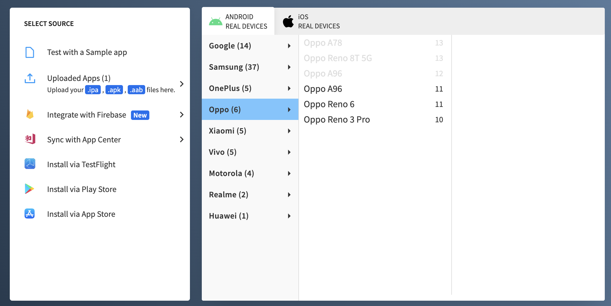
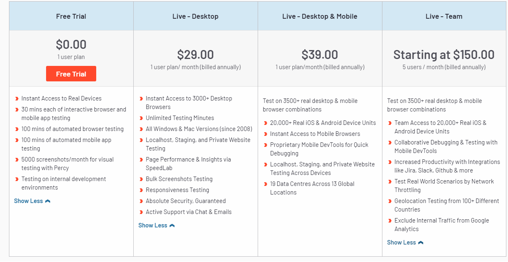

BrowserStack
это облачная платформа для веб- и мобильного тестирования, которая предоставляет разработчикам возможность тестировать свои веб-сайты и мобильные приложения в браузерах, операционных системах и на реальных мобильных устройствах по запросу. Компания базируется в Индии.
Его основные преимущества:
Нет необходимости устанавливать и настраивать множество браузеров и устройств.
Возможность тестировать приложения из любой точки мира, с любого устройства.
Тестирование совместимости веб-приложений на различных платформах, браузерах и устройствах.
Простой и интуитивно понятный интерфейс.
Как это работает?
step 1: Вы запускатете тест где выбираете браузер, устройство, OC
step 2: BrowserStack запускает виртуальный браузер на выбранном устройстве.
step 3: Вы делаете что хотите(выполняете все интересующие вас тесты).
step 4: Смотрите отчет о результатах тестирования.
step end: The end
Зачем это вообще использовать?
Многие сейчас подумают что это расширение бесполезно ведь в консоли разработчика можно просматривать как сайт смотрится с разных разрешений и зачем использовать что то другое? Одно из самых главных преимуществ использования BrowserStack является экономия времени и ресурсов разработчика что может быть очень важно имея четкие дедлайны.
Также важно что можно просматривать это с разных моделей и версий телефона, просматривая страницы с разных браузеров, например шрифт который написал разработчик мождет по разному смотреться с телефонов андроида и айфона и в некоторых ситуациях это может вызвать недовольство заказчика.
Тарифы
Таблица достоинств и недостатков
| + | - |
|---|---|
| Есть бесплатная версия | Максимальное время сессии в free версии 2 минуты |
| Доступно в РФ | Ограниченое количество смартфонов в free версии |
| Сервис позволяет делать скрины и записи экрана |